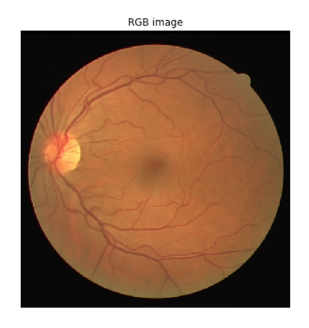
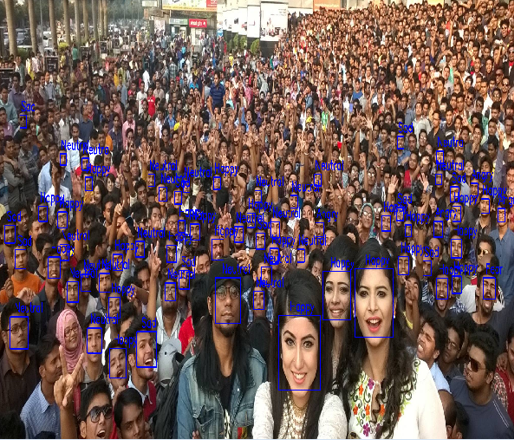

Research
Research on Artificial Intelligence, Computer Vision(CV), Natural Language Processing(NLP), and Multimodal modeling algorithms.

Medical Image Processing/NLP
2022/10
MIP Dataset, MIP network(Unet,Unet2),NLP Base Theory.
Emotion Recognition
2022/03~2022/09
Research on face-facial based emotion recognition, context-aware based emotion recognition, and learn the latest papers related to Transformer.

Object etection & YOLO
2021~2022
Methods of object detection and algorithm reproduction, reproduction of YOLO and other related paper projects, etc.

Face Recognition & Object etection
2021~2022
Papers and replication of face recognition algorithms, based on different methods of face recognition. Understanding of algorithms for target detection, and algorithms for target detection.
Face Detection
2018/08~2020/12
Study of traditional methods of detecting faces, implementation of face detection.
Lina Notes
Notes - Write something.
TODO List Details
Everyday todo list.